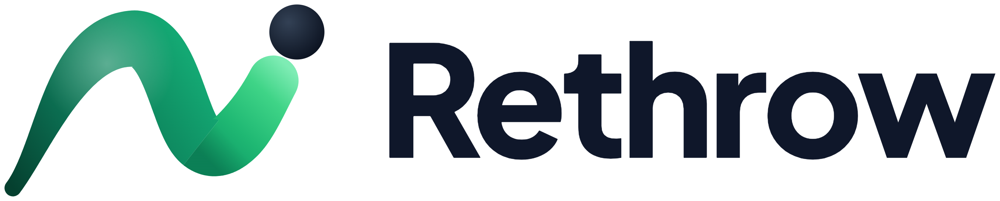

Rethrow x Kiro
Rethrow is a bring-your-own-agent (BYOA) platform that moves vibe-coded prototypes into a cloud account the builder owns, then lets them keep building in a friendly Studio with the coding agent of their choice. We are proposing that Kiro become our featured agent partner, starting with a holiday cohort in December and growing into a standing Kiro onboarding path at launch.
The ask, in one line: provide complimentary Kiro credits to Rethrow builders who do not yet have a coding agent subscription, so their first experience of building on their own cloud is with Kiro. After the credits are used, they keep building in Rethrow with a paid Kiro subscription.
Tools like Lovable, Base44, Replit, and Bolt have made it easy for founders and domain experts to get a working prototype in an afternoon. The trouble starts when that prototype meets the real world. Builders hit a cliff on scale, security reviews, cost predictability, and ownership: the app lives inside someone else's platform, runs on a credit meter, and cannot pass a customer's security questionnaire. The usual options: learn cloud engineering, hire a team, or stay stuck.
Our audience is mostly non-technical founders and builders who love the vibe coding experience but want more control over what runs underneath. Many are not comfortable jumping into an IDE or CLI. That is exactly the group a professional agent like Kiro has a hard time reaching today, and exactly the group Rethrow serves.
Rather than building our own agent harness, gateway, and everything that comes with it, Rethrow sits between the coding agent and the cloud provider. The Studio is a familiar builder interface. Under the hood, we maintain the hard parts so the builder's agent can act like a cloud architect.
Builders pay their agent and cloud providers directly. Rethrow charges a flat $100 per migration and $50 per app, per month, with no credits and no markup.
In the next one to two weeks we will announce a holiday cohort to our waitlist of roughly 100 builders. Up to 20 builders get a free, hands-on week with the Rethrow team: we migrate their prototype from GitHub into an AWS account they own, then run daily group sessions on building in Studio, integrations, shipping features, rollbacks, architecture diagrams, and security scans. Each builder gets a free migration ($100) and 30 days of Studio ($50): $150 in value plus training.
Builders must bring a supported coding agent. With Kiro's support, the announcement would read:
"Rethrow is partnered with Kiro. If you don't have a coding agent subscription yet, you get [XX] Kiro credits free. When your credits run out, keep building in Rethrow with your own Kiro subscription."
Rethrow opens a beta to the waitlist in December and reaches general availability in January. Distribution leans heavily on startup communities, where many founders arrive with a prototype but no agent subscription. In Q1, our focus is partnerships with coding agent and harness providers rather than building our own, so Rethrow stays extensible. For builders without an agent, the path becomes simple: create a Kiro account, bring it into Rethrow, and keep building.
| Timing | Milestone | Kiro involvement |
|---|---|---|
| Early Nov | Season of Giving event page live; applications open | Kiro named as partner; credit offer in copy |
| Late Nov | Cohort selected and notified | Credit codes issued to builders without an agent |
| Dec 14 to 18 | Cohort week: 20 apps migrated to AWS, daily sessions | Optional Kiro guest session on spec-driven building |
| Dec to Jan | Beta opens to the waitlist; general availability in January | "Get started with Kiro" onboarding step; joint case studies |
| Q1 2027 | Agent and harness partnership program | Deeper integration (ACP adapter, toolkits), referral terms |